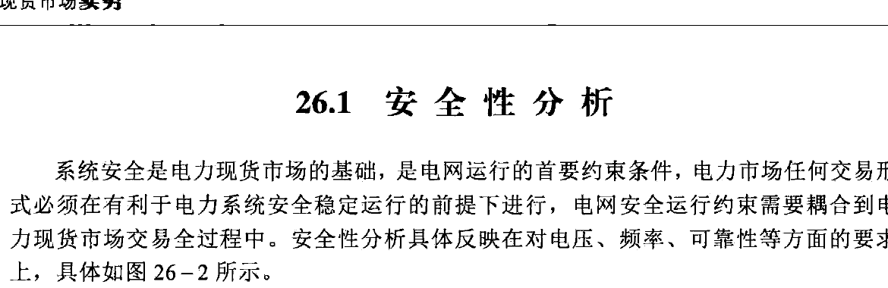
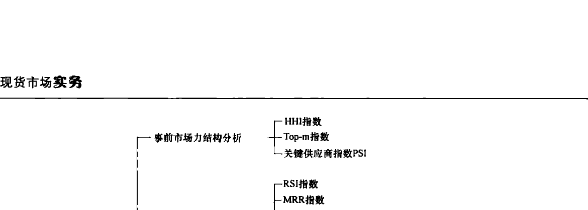
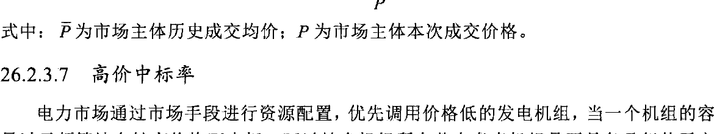
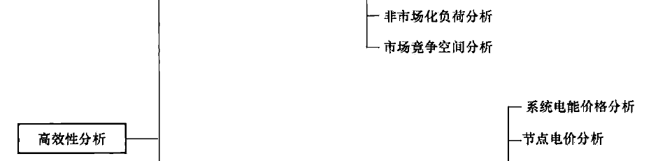
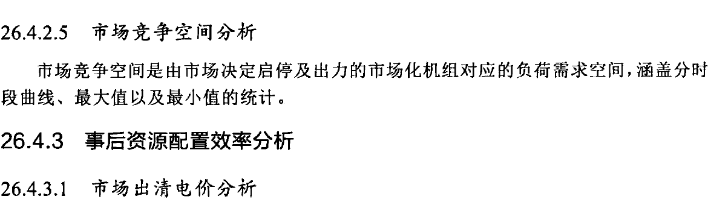
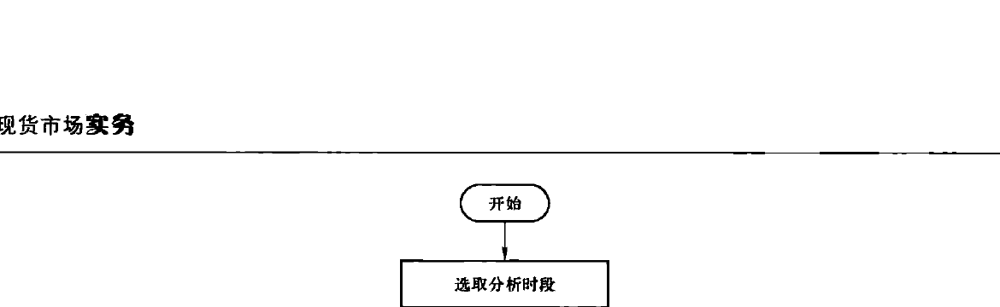
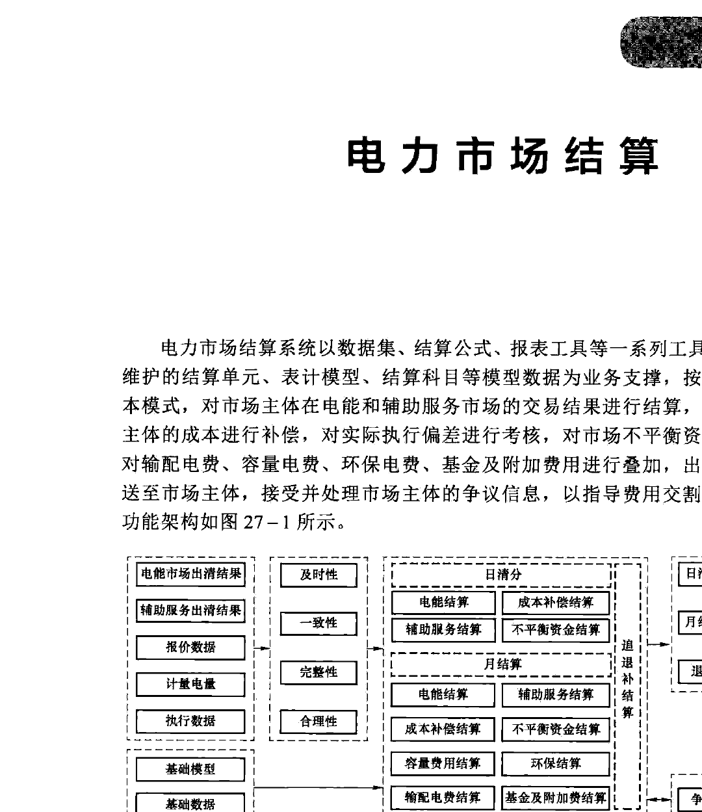

26.1 安全性分析
系统安全是电力现货市场的基础，是电网运行的首要约束条件，电力市场任何交易形式必须在有利于电力系统安全稳定运行的前提下进行，电网安全运行约束需要耦合到电力现货市场交易全过程中。安全性分析具体反映在对电压、频率、可靠性等方面的要求上，具体如图26-2所示。

26.1.1 事前系统供需平衡分析
26.1.1.1 系统可用容量分析
系统可用容量是结合实际，考虑机组检修、燃料等因素，所有统调机组可作为负荷供应、备用供应的容量之和。涵盖电力现货市场的系统可用容量分时段曲线、最大值以及最小值的统计。
26.1.1.2 系统有效可用容量分析
系统有效可用容量是指结合实际，在系统可用容量的基础上，考虑电网阻塞原因导致的容量限制因素，对所有统调机组可作为负荷供应、备用供应的容量之和进行统计。涵盖电力现货市场的系统有效可用容量分时段曲线、最大值以及最小值的统计。
26.1.1.3 非现货市场机组出力计划分析
支持非电力现货市场化机组出力计划加总计算是对未参与电力现货市场的统调机组出力计划进行加总，以支撑出清人员更细致全面地分析系统供给情况。涵盖电力现货市场的非市场化机组出力计划分时段曲线、最大值以及最小值的统计。
26.1.1.4 外来电/外送电电力分析
随着全国统一电力市场建设速度不断加快，外来电/外送电对省内电力现货市场价格的影响程度越来越高。系统支持电力现货市场的外来电/外送电电力加总、外来电/外送电分线电力分时段曲线、最大值、最小值以及外来电水平与现货出清价格关联度的统计分析。
26.1.1.5 系统负荷预测分析
负荷预测是保证电力供需平衡的基础，并为电网、电源的规划建设以及电网企业、电网使用者的经营决策提供信息和依据。电力现货市场环境下的负荷预测直接影响机组启停、备用容量、社会福利等。支持对系统负荷预测加总、短期系统负荷预测、超短期系统负荷预测、短期母线负荷预测、超短期母线负荷预测的统计查看。涵盖分时段值、最大值以及最小值的统计。
26.1.1.6 系统供需比分析
系统供需比是指系统实际物理发电能力和外来电（外送电）的加总与系统负荷总需求量的比值，支持对系统分时段供需比、系统平均供需比、系统最大最小供需比的统计计算。
26.1.1.7 备用需求分析
备用需求是指用来消除可能危害系统稳定的、难以预测的大电能偏差需求，支持备用辅助服务未建立、已建立情况下的系统正备用需求、系统负备用需求展示。
26.1.1.8 调频需求分析
调频需求主要是用来消除快速负荷波动、难以预测的较小程度发电变化以及电能市场没有考虑到的各交易时段内的负荷波动，支持备用辅助服务市场未建立、已建立情况下的系统调频需求展示。
26.1.2 事中安全校核分析
26.1.2.1 系统平衡分析
对全天各时段的系统负荷预测、机组中标出力、联络线计划、机组固定出力计划等数据进行统计分析，并基于校验公式：机组出力+联络线计划−厂用电=母线负荷+系统网
损，对系统平衡进行验证。
26.1.2.2 交流断面重载分析
根据潮流计算结果对各交流断面的负载率进行统计,分析超过一定限额的重载断面的主要影响节点,分析断面重载原因。
26.1.2.3 直流断面阻塞分析
根据潮流计算结果对各直流断面的负载率进行统计,分析对断面功率影响较大的机组和联络线,分析二者对断面重载的有功贡献和对断面有功偏差贡献。
26.1.2.4 重要输电线路检修/故障情况分析
输电线路的检修/故障情况将直接影响电网的运行情况,电力市场运营在变化的电网物理环境下,面临的市场运营风险也会变大。统计并检测线路总输电容量,包括省内和省间联络线传输容量,有利于监测电网的运行状况,为市场的稳定运行保驾护航。
定义重要输电线路检修故障率来监测其检修故障情况,指标计算可表示为
式中: $C_{M\&O}$表示检修（malfunction）及故障（overhaul）的线路的总传输容量; $C_{all}$表示线路传输总容量。
26.1.2.5 事中临时停运的线路传输容量分析
在电网实时运行中,临时停运的线路将对电网实时状态产生较大影响,从而通过现货的电价反映在电力市场中,把风险传导至电力市场。因此,定义事中停运容量指数来统计实时运行过程中临时停运的一定电压等级（如220kV）及以上的线路传输容量,计算公式表示为
式中: $C_{Off-grid}$表示临时停运的一定电压等级线路传输容量; $P_{load}$表示系统预测负荷; $k$为系数,用于设定基准容量,通常取1%。
26.1.3 事后电网运行偏差分析
26.1.3.1 检修停复电准确率分析
输电设备的检修状态是电力现货市场出清的边界条件之一。市场出清中,设备状态数据由生产系统推送,若设备实际状态与推送情况相差过大,将直接导致日前和实时价格偏离,阻塞分布差异变大因此,需要统计输电设备的检修停复电准确率。
检修停复电包括停电时间准确率和复电时间准确率,计算公式表示为
式中：$T_{\text{offset}}$指输电设备停电或复电提前或推迟的总时间，停电或复电提前时为正，停电或复电退延后时为负；$T_{\text{all}}$指输电设备本次检修的总申请时长。
检修停复电准确率会直接影响到日前市场的运营情况，令日前市场价格与实时市场价格产生较大偏移。实际分析中，可与实时价格、阻塞情况等进行对比，辨别检修停复电及准确率带来的风险和影响。
26.1.3.2 联络线计划临时调整分析
联络线计划是电力现货市场出清的边际条件之一，当联络线计划进行临时调整时，实时市场采用调整后的联络线计划进行出清，这种情况下的日前价格和实时价格可能相差甚远。
因此，需要统计日前市场出清后的省间联络线计划调整情况，包括各时段所有联络线的总输送量的变化（相较于日前计划）。定义联络线计划调整比例为
式中：$Q_{\text{adjust}}$为联络线增送量或减送量，联络线增送时为正，减送时为负；$Q_{\text{da}}$为联络线日前计划输送量。
联络线计划调整比例在与日前价格、实时价格进行对比后，可以辨别日前价格和实时价格的价差原因是否来自联络线计划调整。
26.1.3.3 负荷预测偏差分析
影响日前市场出清和实时市场出清结果差异的原因之一是，日前市场出清采用的是日前负荷预测数据，实时市场出清采用的是边际条件调整后的实时负荷数据：日前负荷预测和实时负荷预测的差别，将直接影响两个市场出清结果。负荷预测偏差过大，将令电力现货市场的价格收敛愈发困难，市场的风险也将增大。
定义市场负荷预测偏差率，计算公式为
式中：$P_{\text{da}}$为日前市场的负荷预测；$P_{\text{n}}$为实时市场的负荷预测。
26.2 公平性分析
电力市场公平性的本质是鼓励和保护各市场主体平等竞争，保障电力价格主要由市场决定，电力消费者自由选择、自主消费，电力生产者自主经营、公平竞争。通过公平竞争促进电力各生产要素的合理流动和优化配置，并实现电力能源经济的高质量发展。公平性分析的主要内容包括市场集中度分析、市场行为规范性分析等，如图26-3所示。

26.2.1 事前市场力结构分析
26.2.1.1 赫芬达尔—赫希曼指数（HHI）
赫芬达尔—赫希曼指数（HHI）是指基于某市场中企业的总数和规模分布，将相关市场上的所有企业的市场份额的平方后再相加的总和，定义为
式中：$S_i$为市场中第$i$个发电厂商所占的市场份额；$N$为市场中的发电厂数量。HHI和市场集中度呈正相关，市场评估者可依据实际情况通过HHI判断市场集中度情况。例如，美国司法部制定的通过HHI反映市场集中度的判断标准为：① 高寡占市场，$\text{HHI} \geq 1800$；② 低寡占市场，$1800 > \text{HHI} \geq 1000$；③ 竞争型市场，$\text{HHI} < 1000$。必须指出的是，实际判断市场集中度的时候，并不能完全依据以上HHI计算的结果范围，还需要结合具体情况综合判断。
26.2.1.2 TOP-m指数
TOP-m指数是指市场上份额最大的$m$个发电企业所占的市场份额之和，用公式表示如下：
式中：$S_i$为发电企业按照市场份额从大到小排序后，第$i$个发电企业的市场份额。
Top-m指数是计算市场中最大的$m$个发电公司所占的市场份额大小，国际上通常采用Top-4，即计算4个不同发电厂商所占有的市场份额。且通常认为Top-4指标大于65%时，市场具有寡头垄断性质；大于75%时市场不能进行有效竞争。一般来讲，市场占有率越大，市场力也越大。但是，在电力市场中，由于阻塞的缘故，一个市场份额很小的发电厂商也可能在某一局部范围内拥有巨大的市场力。
26.2.1.3 关键供应商指数
关键供应商指数（PSI）主要用于对市场主体进行关键供应商分析，其含义是如果当某个发电企业不向市场主体供电时，该区域就面临断电的处境，PSI就为1；否则就为0。用公式表示为
式中：$\sum Q_i$为所有发电企业的发电能力，$Q_j$为发电厂商$j$的发电能力；$D$为总需求。当PSI为1时，该发电企业毫无疑问拥有市场力。该指数首次应用是美国联邦监管委员会在2001年用于测定发电企业的市场力（FERC 2001）。目前该指数被加州ISO、PJM和得州ERCOT用于市场力自动控制程序，即可用于动态市场力监测和事中在线监测。
26.2.2 事中市场力行为影响分析
26.2.2.1 剩余供应率指数
剩余供应率指数（RSI）是指电力市场中某一时段除某个发电企业之外，其他发电企业的市场份额之和，用公式表示为
式中：$n$为市场中发电企业的个数；$q_j$为第$j$个发电企业的申报容量（或电量）；$q_i$为第$i$个发电企业的申报容量（或电量）；$D$表示市场总需求。
当$I_{\text{RSI}} < 1$时，表示市场中缺少第$i$个发电企业将无法满足市场需求，该发电企业具有市场力，$I_{\text{RSI}}$越小，则说明其控制市场价格的能力越强。$I_{\text{RSI}} = 1$是第$i$个发电企业具有市场力的临界点。通过对市场上各发电企业逐一计算RSI指数，可以甄别具有市场力的发电企业，及其市场力的大小。
RSI通常用于衡量单个发电企业对电力市场整体供应的影响，但也可通过RSI指数对整个市场进行评价，如以最大三个发电厂商的剩余供应率按照其计算时段的发电容量比例作为权重的RSI平均值作为整体市场的RSI指标。RSI和PSI高度相似，都体现若该发电企业不提供出力市场需求能否被满足。
26.2.2.2 强制运行率指数
强制运行率（must run ratio，MRR）指某一时段为满足系统负荷需求，一个发电企业必须发电的功率占其可发电容量的比例，用公式表示为
式中：$D$表示市场中某一时刻的总需求；$q_j$表示市场中第$j$个发电企业的申报容量；$C_i$表示第$i$个发电企业的可发电容量。
当市场中其他发电企业不能满足市场需求时，第$i$个发电企业的强制运行率$I_{\text{MRR},i} > 0$；否则，该发电企业的强制运行率$I_{\text{MRR},i} = 0$。发电企业的MRR越高，其市场力就越大；在极端情况下，强制运行率为1时，该发电企业的全部容量可任意定价。
在电力市场实际运行中，输电线路的阻塞可能将整个市场划分为多个负荷区域，使得原本不具备市场力的发电企业拥有局部市场力，从而动用市场力操纵市场价格。通过分析负荷口袋区各发电企业的必须运行率，可以为电力监管、电网规划提供决策依据，特别是在我国输电网相对薄弱的现状下，对负荷区域内市场结构的分析更具有现实意义。例如电力市场在发电侧高度垄断的情况下，部分发电企业的部分机组可能支撑重要负荷区域的供电，并且占有了较大的比例，如果其他区域的机组因为阻塞和断面约束等原因无法为该区域供电，那么这部分机组就有很大的强制运行率，则该发电企业的定价权极大。
26.2.2.3 三寡头测试指标
三寡头（three pivotal supplier，TPS）测试指标的计算公式可表示为
式中：$\text{TES}$为所有机组有效缓解阻塞线路潮流总量；$\text{ES}_A$为机组A有效缓解潮流；$\text{ES}_B$为机组B有效缓解潮流；$\text{ES}_i$为机组$i$有效缓解潮流（其中机组A到机组$i$的有效缓解潮流量由大到小排列）；$\text{DR}$为缓解阻塞所需的潮流总数。
针对由于网络输电容量限制造成的局部地区市场成员潜在市场力程度较高、控制节点电价的能力较强的情况，三寡头测试指标可以作为事中市场力识别的必运行机组确定准则，抑制由于输电阻塞引起的发电厂商策略报高价的动机。该方法可以判断发电厂商缓解某条输电线路阻塞的影响因子，从而评估该机组是否定为必运行机组而进行价格管制。判断机组是否为必运行机组的原则为：① 若三寡头垄断测试结果为该机组控制线路阻塞能力大于1，表明该测试机组对缓解线路阻塞作用并不显著，无需进行管制；② 若三寡头垄断测试结果为该机组控制线路阻塞能力小于1，表明该测试机组必运行机组，需要进行管制。
26.2.2.4 申报容量剩余度
申报容量剩余度是指申报剩余容量和装机容量的比值。申报容量剩余度市场风险行为
表现手段为行使物理持留，即发电企业有意不向市场提供其有能力提供的发电容量。申报容量剩余度的公式可表示为
式中：$Q_{\text{bid}}$为申报容量；$Q_{\text{installed}}$为装机容量。
市场投机行为的发生往往伴随着特定的市场投机场景，核心在于因特定时机而获得抬升的临时市场力。因此，通过统计一段时间内的申报容量剩余度，关注发电企业的申报容量剩余度是否会在特定时段出现有规律性的提高，便可为市场力行为分析提供参考依据。
26.2.2.5 异常报价
市场运营稳定后，市场主体的报价在一定统计周期内是具有一定稳定性的，当市场主体的报价相较于历史报价情况产生较大偏移时，可能是市场主体正在尝试新的报价策略以获取更高利润，与利润相对等的是，这种报价行为的改变同样会带来一定风险。因此，监测每一个市场主体的异常报价有益于发现市场主体的风险点。
定义报价偏移率来对异常报价进行监测，公式可表示为
式中：$p_{\text{bid}}$为申报价格；$p_{\text{ave}}$为该市场主体在一定的历史统计周期内的加权平均报价。
监测一定周期的报价偏移率，当报价偏移率在1附近时，该市场主体的报价比较稳定。通过计算报价偏移率的极值、方差等，发现报价偏移率偏离1的情况，从而以此为据深入分析市场主体的报价风险。
26.2.2.6 异常申报容量
当市场主体的申报容量相较于历史申报容量情况产生较大偏移时，市场主体的盈亏稳定性会降低。
定义申报容量偏移率来对异常申报容量进行监测，公式可表示为
式中：$Q_{\text{bid}}$为申报容量；$Q_{\text{ave}}$为该市场主体在一定的历史统计周期内的平均申报容量。
监测一定周期的申报容量偏移率，当申报容量偏移率在1附近时，该市场主体的申报容量比较稳定。通过计算申报容量偏移率的极值、方差等，发现申报容量偏移率偏离1的情况，从而发现市场主体的风险。
26.2.2.7 横向报价波动率
市场主体在进行申报时，若按照边际成本报价，同类型机组的申报水平是保持一致的，因此，把市场主体的报价横向与同类型机组的申报水平进行对比，能发现报价高于一般水
平的机组，并采取相应措施。计算公式可表示为
式中：$\bar{P}$为市场主体历史申报均价；$P$为市场主体本次申报价格。
26.2.2.8 Lerner指数
在电力市场交易过程中，市场主体滥用市场力的行为最常见的形式是通过申报较高的价格来操纵市场价格以获利，在完全竞争的情况下，一般认为市场主体的报价应当接近其边际成本，因此通过判断市场主体在交易过程中的报价与其成本的偏离情况是可以判断其是否存在滥用市场力的行为或其他异常情况。通常采用Lerner指数衡量价格偏离边际成本的程度，计算公式可表示为
式中：$P_D$是市场主体的申报价格；$C_m$为市场主体的边际成本。Lerner指数越大，则认为报价偏离边际成本越高，即认为报价的合理性越低。Lerner指数能准确反映市场主体动用市场力行为，但主要的问题在于如何精确计算市场主体的边际成本，因此在运用上往往难以仅根据此指标作出市场力的判别。
26.2.2.9 输出差额指标（OGI）
美国电力市场采取了输出差额测试（output gap analysis，OGA）来判断发电厂商的持留行为。
输出差额本质上是已投标电量中因高于市场竞争水平而被市场扣留的电量。因此，任一机组的输出差额可表示为
式中：$Q_i^{\text{econ}}$是机组$i$的经济输出电量，由代理报价计算得出；$Q_i^{\text{prod}}$是机组$i$的实际输出电量。为了避免代理报价不能准确反映实际边际成本，一般仅估计价格非常的时期，比如绝大部分机组的报价都低于市场出清价等。不过在有对机组的边际成本进行有效核算的市场中，可以根据核定的机组边际成本作为判断经济输出电量的代理报价。
输出差额是用来测量物理持留或经济持留的一个标准。输出差额的定义是某一发电厂商投入市场并盈利的容量与其实际容量的差值。输出差额过大，发电厂商存在物理持留或经济持留情形，并以此拉高电力价格，这是其滥用市场力的表现之一。输出差额是最常用于经济持留检测的指标，例如可以通过对比某一发电机组的历史平均出力水平，分析其是否具有异常的产量下降或其他行为，从而判定是否动用市场力。输出差额分析的关键问题包括：
（1）在负荷高需求时期，当价格对机组输出的改变比较敏感时，机组经济持留的动机会增强，因此输出差额分析通常运用于分析负荷高峰时潜在的持留情况。
（2）具备较大发电容量的公司具备更强的经济持留能力，此类公司也可能有着更强的持留动机，因此他们也通常是输出差额分析的主要对象。
输出差额指标（output gap index，OGI）可初步判断存在输出差额的公司获得市场力的大小。具体定义为
式中：$Q_i^{\text{nor}}$是机组或供应商按额定发电容量发满全时段的电量。
OGI越大，说明机组或供应商有更高的持留嫌疑。
26.2.3 事后市场行为分析
26.2.3.1 市场成员出清结果实际执行情况分析
对发电机组日前调度计划与机组是否按时执行启停机操作进行比对，支持对开停机时间提前时段、滞后时段相关指标的统计计算，对启停执行偏差较大的机组的突出显示。支持对实时调度计划与机组实际出力进行比对，对两者差值的统计计算，对偏差超过一定阈值范围的机组突出显示。支持对AGC调度指令与机组实际AGC执行进行比对，对两者差值的统计计算，对偏差超过一定阈值范围的机组突出显示。
26.2.3.2 统计期内的平均申报价格
平均申报价格反映了全市场交易意愿的价格水平。通过对平均申报价格的统计和监测，获取平均申报价格抬升或下降的趋势，从而反映发售双侧交易意愿的减小或增大。
平均申报价格的计算公式可表示为
式中：$p_i$为统计期内第$i$个申报段的价格；$q_i$为第$i$个申报段的中标容量；$n$为统计期内申报段的数目。
26.2.3.3 统计期内的平均申报容量
机组的检修、故障通常是错开的、偶发的，因此，平均申报容量在一定统计期内通常能保持稳定。当平均申报容量发生突然下降时，一方面市场可能面临供给紧张的风险，另一方面也可能存在大容量机组进行物理持留、行使市场力的可能性。
平均申报容量的计算公式可表示为
式中：$q_i$为第$i$个申报段的容量；$n$为统计期内申报段的数目。
26.2.3.4 报价相似性
通过对市场主体的报价进行聚类计算，分析其报价的相似性。主要思路如下：
（1）对所有报价进行聚类，寻找相似报价。相似报价是判断发电企业是否串谋的基础和前提。当通过聚类识别了相似报价后，判断相似报价是否属于同一发电集团或存在控股关系、实际控制关系，从而进一步判断相互之间是否存在串谋行为。
（2）对每一市场主体的报价进行聚类，寻找市场主体的惯用报价策略。对同一市场主体一定周期内的报价模式进行聚类识别，判断报价策略的变化大小，必要时可以结合报价的极差和方差进行判断。当市场主体打破自身的惯用报价策略时，有可能是在尝试新的报价模式试图盈利，与收益对等，这种行为同样会带来风险。
26.2.3.5 申报集中度和中标集中度的相关系数
电力现货市场中，市场主体根据自身特性，结合市场边界条件和对博弈格局的预判，确定其多段报价策略。在市场初期，各市场成员之间的策略差异较大。但随着市场成熟度和报价水平的不断上升，整个市场报价将呈现局部差异化和默契报价，这为报价行为分析和串谋识别带来了一定的挑战。通过申报集中度或中标集中度可辅助判断市场主体之间的申报行为的集中性。
计算串谋嫌疑机组集群$S$在现货时段$t$的申报集中度，可表示为
式中：$Q_{i}^{t}$为机组$i$在$t$时段的申报容量；$Q_{\text{all}}^{t}$为$t$时段市场中所有机组申报容量。据上式可得机组集群$S$在现货各时段的申报集中度序列为
计算机组集群$S$在现货时段$T$的中标容量集中度，可表示为
式中：$Q_{i,g}^{t}$为机组$i$在$t$时段的中标出力；$Q_{\text{all},g}^{t}$为$t$时段市场中的总中标出力。同理可得机组集群$S$在现货各时段的中标集中度序列$\bar{H}_{S,G}^{T}$。
对上述申报集中度和中标集中度进行关联分析，可采用相关系数$\text{Cov}\left( \bar{H}_{S}^{T}, \bar{H}_{S,G}^{T} \right)$衡量其相关性。若二者强相关，则认为该嫌疑机组群具备串谋事实，即认为其以相似的报价方式达成了影响市场的目的，即$\text{Cov}\left( \bar{H}_{S}^{T}, \bar{H}_{S,G}^{T} \right)$可视为串谋分析的判定指标。
在确定申报集中度和中标集中度强相关后，还可结合现货模拟出清分析机组集群中的个体对整体中标情况的影响，依次替换串谋嫌疑机组的报价，重复上述关联分析步骤，通过模拟现货出清确定中标容量集中度，若存在某机组被剔除后的相关系数显著变小，则认为该机组对串谋结果影响最大，应重点关注。
26.2.3.6 成交价格偏离度
市场主体的成交价与历史成交价通常基本保持一致，当市场主体的成交价格偏离历史
成交价过多时，可以考虑该成交价格是否存在异常、该市场主体是否有可能在通过串谋等手段牟利。
定义成交价格偏离度来分析市场主体成交价格偏离其历史成交均价的程度，计算公式可表示为
式中：$\overline{P}$为市场主体历史成交均价；$P$为市场主体本次成交价格。
26.2.3.7 高价中标率
电力市场通过市场手段进行资源配置，优先调用价格低的发电机组，当一个机组的容量过于频繁地在较高价格下中标，可以结合机组所在节点考虑机组是否具备且行使了市场力。因此，需要监测机组在高价段的中标率。
定义高价中标率为机组的高价中标容量占总中标容量的百分比，可表示为
式中：$Q_{\text{high-price}}$为中标容量中价格超过了阈值的容量之和；$Q_{\text{cleared}}$为该机组的总中标容量。
26.3 绿色性分析
在环境气候问题对人类生存影响越来越大的情况下，绿色属性在竞争性电力市场固有内涵中的比重越来越大，绿色价值成为降低电力系统污染排放水平、适应人类环保与健康需要的配置电力资源的新增长点。绿色性分析旨在反映市场交易对节能减排和新能源消纳的促进作用，如图26-4所示。

26.3.1 事前能源结构分析
26.3.1.1 可再生能源装机占比分析
各类别可再生能源（水、风、光）在省内装机容量的占比以及可再生能源装机总和在
省内装机容量的占比情况。
26.3.1.2 可再生能源功率预测
由于可再生能源具有一定的波动性，因此预测其功率对系统平衡和市场出清至关重要。可再生能源功率预测主要是对某个场站或者某个区域未来一段时间的风电或者光伏功率序列进行预测。按照时间尺度可以划分为超短期、短期以及中长期。
26.3.2 事中可再生能源申报分析
26.3.2.1 可再生能源底价申报率
统计不同交易时段可再生能源底价申报率，分析对应的可再生能源出力情况，以进一步评估市场价格的波动性。
26.3.2.2 可再生能源申报容量占比
分析整个市场可再生能源申报量占比以及各类别可再生能源的申报量情况。
26.3.3 事后绿色低碳成效分析
26.3.3.1 节能减排成效分析
通过电力现货市场机组发电量的统计，结合发电量与CO₂排放量、SO₂排放量、粉尘排放量、氮氧化物排放量等排放量之间的关系，统计市场运营所减少的煤耗和污染物排放量。
26.3.3.2 可再生能源消纳量分析
分析整个市场可再生能源消纳总量、弃风率、弃光率、弃水率以及各类别可再生能源的消纳量情况。
26.4 高效性分析
电力市场改革最根本的目标就是提高电力系统资源的配置效率，更加具体地讲，就是在有限的资源条件和技术、经济等约束情况下，还原电力商品属性、发现电力价格信号，最大程度上满足电力用户的需求。高效性分析主要挖掘电力现货市场经济性价值对激发市场活力、促进资源优化配置的作用，如图26-5所示。
26.4.1 事前市场竞争情况分析
26.4.1.1 能源依赖率分析
能源依赖率是指外来电之和与负荷需求量之和的比值，涵盖分时段曲线、最大值以及最小值的统计。

26.4.1.2 中长期交易价格分析
发电侧和用户侧中长期交易按交易时间粒度的电量与电价测算出的加权平均价格。
26.4.1.3 中长期交易电量分析
中长期省内直接交易电量、省间直接交易购电量和省内机组发电权交易电量的总和。
26.4.1.4 市场主体注册情况分析
发电企业、电力用户（含零售用户）与售电公司注册总数、分类别市场主体注册数量和分类别市场主体数量占比；支持按照火电、水电、风电、太阳能和其他类型，对注册发电企业数量、装机规模和占比情况进行分类统计与分析；支持按照各发电企业所属发电集团，对注册发电企业数量、装机规模和占比情况进行分类统计与分析；支持按照售电公司资产总额分布情况，对注册售电公司数量和占比情况进行分类统计与分析；支持按照省内电力用户（含零售用户）所属电压等级分布情况，对注册电力用户（含零售用户）数量和占比情况进行分类统计与分析。
26.4.2 事中市场供需平衡分析
26.4.2.1 市场可用容量分析
结合实际，不仅考虑机组检修、燃料等原因限高，而且考虑市场成员申报行为，对所有参与电力现货市场的机组可作为负荷供应、备用供应的容量之和进行统计。涵盖电力现货市场的市场可用容量分时段曲线、最大值以及最小值的统计。
26.4.2.2 市场有效可用容量分析
市场有效可用容量是指结合实际，在市场可用容量的基础上，考虑电网阻塞原因导致的容量限制因素，对所有参与电力现货市场的机组可作为负荷供应、备用供应的容量之和进行统计。涵盖电力现货市场的市场有效可用容量分时段曲线、最大值以及最小值的统计。
26.4.2.3 市场申报负荷分析
市场申报负荷是指参与电力现货市场的电力用户申报的电力曲线。支持针对两种典型申报形式的申报负荷统计：① 全天申报一组单调非递增的量－价曲线，同时申报全天的用电需求，该申报需求作为出清电力的上限；② 针对全天不同的时段申报不同的单调非递增的量－价曲线，以每个申报量作为出清电力的上限。支持对电力用户申报负荷加总的统计，涵盖分时段曲线、最大值以及最小值的统计。
26.4.2.4 非市场化负荷分析
非市场化负荷是指不参与电力现货市场的用电需求的统计，涵盖分时段曲线、最大值以及最小值的统计，以支持对系统用电需求更全面的分析。
26.4.2.5 市场竞争空间分析
市场竞争空间是由市场决定启停及出力的市场化机组对应的负荷需求空间，涵盖分时段曲线、最大值以及最小值的统计。
26.4.3 事后资源配置效率分析
26.4.3.1 市场出清电价分析
1. 系统电能价格分析
系统电能价格即为无约束出清价格，系统电能价格分析通常选取电价突增、突降、负值、过高、过低等电价异常的时段作为关注时段，通过查看该时段的边际机组和边际机组的折后电价判断价格的合理性：若只有一台边际机组，则系统电能价格即为该边际机组的折后报价，或者折后报价高于最高限价则系统电能价格为最高限价；若有多台边际机组，则系统电能价格为这几台边际机组的折后报价的加权平均值；以上数据一致，则说明系统电能价格合理，具体分析流程如图26-6所示。

2. 节点电价分析
节点电价分析是依托节点边际电价与各个机组运行约束、系统平衡约束、备用需求约束、断面限值约束等的影子价格的内在关系，统计展示节点边际电价的构成成分，实现对节点边际电价的成因分析以及合理性验证。待分析节点支持自由灵活筛选，该筛选功能与价格的极值统计等功能相互关联，辅助出清人员选择最高电价节点、最低电价节点等对应的节点。支持节点边际电价的"系统电能价格+阻塞价格+网损价格"的"三分量"分析方法，也支持"机组的节点边际电价=机组报价+（系统上备用约束的影子价格-系统下备用约束的影子价格）+（机组功率上限约束的影子价格-机组功率下限约束的影子价格）+前后两个时段的爬坡约束影子价格差+后前两个时段的滑坡约束影子价格差"的"多分量"分析方法。节点电价分析流程如图26-7所示。
3. 机组电价成因分析
机组电价成因分析是通过市场成员申报价格、申报段号、限价前电价、各类约束（最大出力、最小出力、检修上限、检修下限、出力偏差、段出力上限、段出力下限、滑坡、爬坡、下时段爬坡、下时段滑坡、正备用、负备用）的影子价格以及是否为边际机组等信息统计判断机组电价形成原因。

4. 系统边际价格与平均价格分析
将发电企业的功率段按报价由低到高排序，形成不同供电水平下的系统边际成本曲线；然后，根据目标交易时段的负荷需求，确定各交易时段所需的最后一台竞价机组的交易电量（或电力），此时所对应的报价就是相应交易时段的系统边际价格。系统边际价格与平均价格分析包括分时段平均节点边际电价的统计、全时段平均节点边际电价的统计。支持系统边际价格与平均价格的分时段、全时段偏差统计。支持假设无阻塞情况下的系统边际电价计算，分析该无阻塞情况下的系统边际电价与平均节点电价的分时段、全时段偏差统计。
5. 分地区电价分析
分地区电价分析是指通过统计各地区电价分布、各地区峰谷平电价情况，分析电价分布合理性。
6. 备用价格分析
备用价格分析是指通过统计各个时段机组的备用出清容量、备用出清价格以及系统总体的备用出清价格水平，分析备用出清结果的合理性。
7. 价格极值分析
价格极值是指一定交易时段内价格的极大值和极小值，价格极值时刻往往与市场供需、系统供需、异常情况等有着天然联系，价格极值分析包括分时段系统平均节点边际电价的最大、最小值分析，各个市场主体的节点边际电价的最大、最小值分析，分时段各个市场主体的节点边际电价的最大、最小值分析。
8. 价格波动性分析
价格波动是电能生产成本和供求关系上下涨落所引发的现象，一般来说，电能生产成
本下降较多，或者供需宽松时，电能价格就会下降；相反，在电能生产成本有所上升，供需紧张时，电能价格就会上升。价格的基础是价值，价格总是围绕着价值运动，因而价格的上下波动是有一定限度的，当价格波动异常时，需要进行相应的市场分析。出清价格波动性分析包括分时段系统平均节点边际电价的波动性分析、各个市场主体的节点边际电价波动性分析、系统电能价格的波动性分析等。
9. 7日移动平均线指标分析
移动平均线是金融市场中常见的技术分析工具，用于分析时间序列，常应用于股票价格序列。移动平均线可以过滤高频噪声，具备平滑性，反映出中长期低频趋势。当出清日电价高于移动平均线时，则认为当前的价格是高于市场趋势水平的，反之亦然。
在此以7日移动平均线为例，计算公式可表示为
式中：$y_i$为第$i$天移动平均线的值；$p_{i-1}$为第$i-1$天的电价。
10. 日前实时价差分析
在竞争充分、信息透明的市场中，所有市场成员可以在日前和实时两个市场中进行交易，当日前市场价格高于实时市场时，发电厂商会倾向在日前市场进行交易，从而导致日前市场供给量提高，拉低日前市场的价格，反之也一样。因此，在一个运行稳定、价格信号明确的电力市场中，日前市场和实时市场的价格是收敛的，即日前和实时的价差在一定统计周期内数学期望为0。通过统计日前和实时的价差，可以监测电力市场的运行状态。
定义日前实时价格偏差率来监测日前实时市场的价差，计算公式可表示为
式中：$p_{da}$为某时段日前市场的出清价；$p_{rt}$为同一出清时段实时市场的出清价。
11. 实时价格尖峰率指标分析
实时价格尖峰率主要用于反映价格过高的风险，通常由于高峰容量趋紧或持留行为引起。支持按日、按已运行时间跨度等统计计算实时价格尖峰率，支持基于尖峰价格阈值、价格变化率的多种尖峰价格判定方法。其中尖峰价格阈值法是指当价格高于阈值时，被识别为尖峰价格；价格变化率法是指前后两个时段的价格变化斜率超出一定数值，被识别为尖峰价格，支持其他尖峰价格识别逻辑的灵活配置。
12. 出清价格波动率
电价波动幅度越大，则价格风险越大。在电力市场中，按周、月为统计周期，计算出清价格的波动率。整个市场的价格波动率为各节点波动率的加权平均值，可表示为
式中：$p_{i,1}$为$i$节点在本统计周期内第一天的出清加权电价；$p_{ave}$为$i$节点出清价格均值；
$m$为统计周期的天数。
26.4.3.2 市场成员收益分析
电力市场环境下，各个市场成员的收益是一个"此消彼长"的整体。为保障电力市场改革的持续性，一方面需要在政策、环境等要求下平衡各方收益，维持并提升市场成员的参与热情；另一方面需要控制市场成员收益风险，保证电源、输电线路等资源建设的充裕性。市场成员收益分析是基于收益质量、收益稳健性、收益成分等分析要素，对各市场成员的整体和个体收益进行分析。收益计算相关指标计算如下。
收益率是指根据出清收益、发电成本计算市场成员的投资回报率，可表示为
式中：$P_{\text{return}}$为市场成员出清收益；$P_{\text{cost}}$为市场成员发电成本。
1. 市场成员总体收益分析
市场成员总体收益分析主要对发用电侧市场成员收益、系统盈余和系统成本相关信息进行分析。其中，发电侧信息包括各类型发电机组收益、各集团发电机组收益、各发电机组收益；用电侧信息包括用电侧费用、用户侧平均电价；系统盈余包括发电侧费用、用电侧费用、系统盈余，发电侧电能费用、发电侧阻塞费用、发电侧网损费用，用电侧电能费用、用电侧阻塞费用、用电侧网损费用。
2. 分时段市场成员收益分析
按照交易时段分析市场成员收益，包括各类型发电机组的发电成本、收益、收益率，各类型发电机组的收益率曲线；各类型发电机组的平均电价；用电侧的各时段用电费用、用户侧支付费用曲线、当前时段平均电价；发电侧费用、用电侧费用、系统盈余，发电侧电能费用、发电侧阻塞费用、发电侧网损费用，用电侧电能费用、用电侧阻塞费用、用电侧网损费用，系统发电运行成本、系统发电启动成本及惩罚项数值，随时段变化的系统盈余曲线。
26.4.3.3 市场中标情况分析
电力现货市场中标情况分析是评估出清结果准确性和合理性的重要环节，也是评价市场资源配置效率、市场运营效率的重要环节。基于影响市场中标结果的出清机理，通过全面收集市场中标关联数据对机组启停状态、有无约束结果、边际机组等进行分析。
1. 机组启停状态分析
电力现货市场出清计算的首要任务是确定安全约束机组组合，在满足电网安全约束和备用需求的情况下出清确定机组组合，并决定各机组的启停状态。因此，为确保机组启停结果的合理性，并提供市场成员对于启停结果异议的充分证据，需要对机组启停状态进行分析。具体包括：查询各机组在各交易时段的运行状态，统计有开机动、停机动作的机组列表以及启停动作发生时间；分析不同出清轮次的机组启停合理性，即查看不同出清计算轮次发生开停机的机组信息，进而选择出清轮次，选取关注的机组，查看机组全天运行状态、机组检修计划情况、系统备用情况、机组相关断面信息及灵敏度、机
组报价曲线、相关断面有功及限额、开机曲线、停机曲线，综合得到机组开停机原因。
2. 有无约束结果对比
查看各交易时段有约束机组报价数据叠加信息和无约束机组报价数据叠加信息，并将两者进行比较，分析线路阻塞对机组出清排序的影响，分析出清结果的合理性。
3. 边际机组分析
集中式市场出清模式下，在没有任何约束受限的情况下，市场按机组报价段由低到高排序形成供给申报曲线，供给申报曲线与负荷需求（或者按负荷报价段从高到低排序形成需求申报曲线）两者相交的交点机组即为边际机组。在系统发生网络阻塞的情况下，电网必须调整机组的出力来消除阻塞，由此新增边际发电机组。以机组出力送出受阻为例，原本应该满出力段中标的机组因为出力受阻而不能满发，成为边际机组。在实际情况下，边际机组是哪台或哪几台机组，受到市场成员的申报情况、系统供需、机组参数、检修、网络拓扑、断面限值、固定出力机组出力、外来电、多时段耦合等所有影响市场中标的因素共同影响。支持分析各交易时段的边际机组信息，包括申报价格、修正前电价、修正前电能价格、修正前阻塞价格、电价贡献比例、电价贡献份额。
4. 边际机组形成率分析
边际机组形成率是指某个电厂形成边际机组的时段占整个竞价时段的比例。边际机组形成率是通过市场行为来判断市场力的一个重要判断指标。当某个电厂边际机组形成率远远高于其年发电量占所有竞价电厂年发电量的比例时，可以初步判断这个电厂在市场中具有市场力，可能会存在该电厂操纵市场价格的风险。某台机组的边际机组形成率较高的原因可能是：① 该机组所在位置处于局部受入受阻的易发区域；② 该机组装机容量较大，或者该机组对应市场成员的市场份额较大。可以说边际机组形成率是市场成员市场力的一种量化表征，可通过边际机组形成率，来初步判断市场成员的市场力。
5. 统计期内的平均中标价格
平均中标价格反映了全市场购电成本的水平，在市场充分竞争、信息公开透明的情况下，平均中标价格应当在一定水平内保持稳定，其长期的波动主要由于燃料价格等成本在市场中的传导。对于日前市场、实时市场、中长期市场等，都可以通过平均中标价格的监测来反映市场的异常情况。
平均中标价格的计算公式可表示为
式中：$p_i$为统计期内第$i$个中标段的价格；$q_i$为第$i$个中标段的中标容量；$n$为统计期内中标段的数目。
6. 统计期内的平均中标容量
在竞争充分、负荷平衡的电力市场中，市场中标容量是与用电负荷相等的，因此，在一定周期内，市场的平均中标容量是基本稳定的，反映的是当下平均负荷情况。对于日前市场、实时市场、中长期市场等，都可以通过平均中标容量的监测来反映市场的异常情况。
平均中标容量的计算公式如下所示：
式中：$q_i$为第$i$个中标段的中标容量；$n$为统计期内中标段的数目。
26.5 本章小结
电力市场属于复杂的非线性非自治的大系统，随着电力现货市场的全面建设，实现电力市场分析由定性到定量、离线到在线、确定性到风险的飞跃成为亟需解决的问题。针对此，本章从安全、公平、绿色、高效四个方面出发，构建了电力市场分析模块，力图通过体系化的方式为市场运营业务人员提供辅助决策，为电力系统安全稳定运行保障、电力市场运营效果评价、电力市场风险合规管控提供数据支撑，为电力系统充裕度建设、市场机制优化、市场规则完善、市场体系扩展提供规划依据。
第27章 电力市场结算
电力市场结算系统以数据集、结算公式、报表工具等一系列工具为平台基础，以独立维护的结算单元、表计模型、结算科目等模型数据为业务支撑，按照"日清月结"的基本模式，对市场主体在电能和辅助服务市场的交易结果进行结算，对跟随调度运行市场主体的成本进行补偿，对实际执行偏差进行考核，对市场不平衡资金进行计算和分摊，对输配电费、容量电费、环保电费、基金及附加费用进行叠加，出具详细结算单据并发送至市场主体，接受并处理市场主体的争议信息，以指导费用交割。电力市场结算总体功能架构如图27-1所示。

27.1 结算支撑工具
结算业务具有以下特点：
（1）规则复杂、计算简单。结算是电力市场的最后一个环节，需考虑市场运营的各种